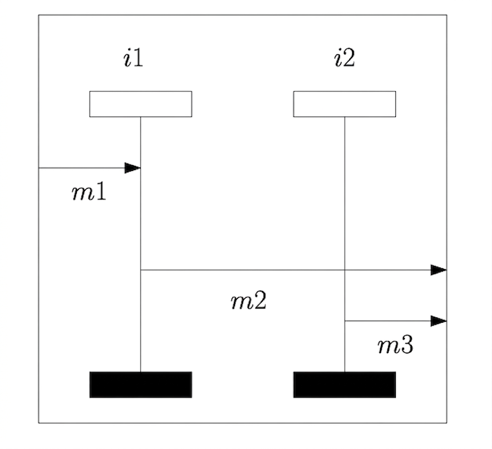
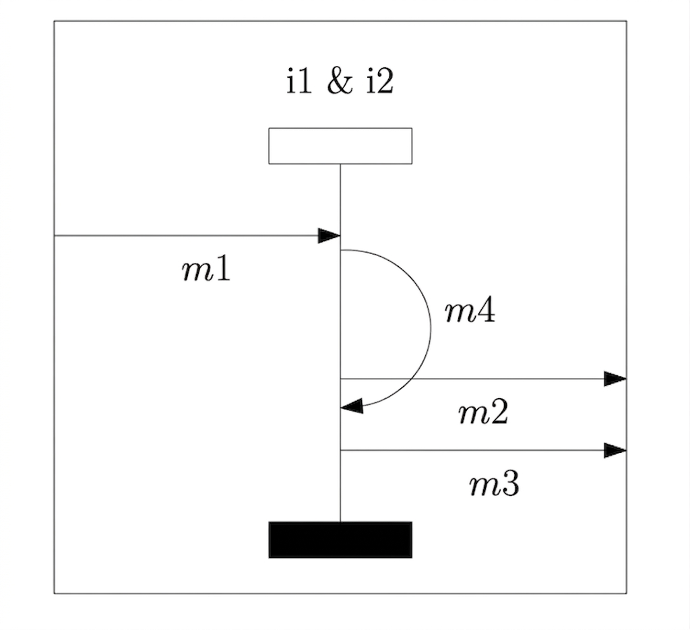
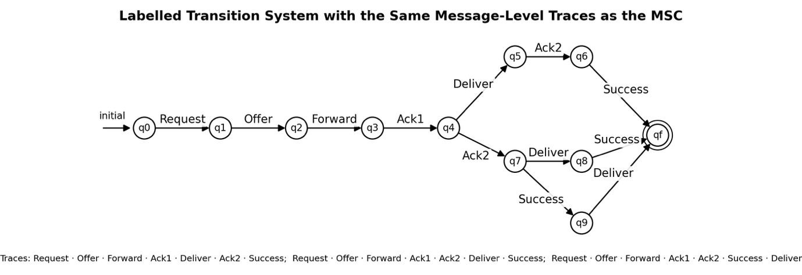

Annotations / Gemini 3 - Thinking / Example 3.docx
Hi, consider the following message sequence chart. Please identify the events in this MSC.

Based on the provided Message Sequence Chart (MSC), an "event" corresponds to either the sending or the receiving of a message on a specific lifeline (instance).
Here is the complete list of events identified in the chart, grouped by the instance they occur on:
Events on Instance $i1$
Receive $m1$: The event where instance $i1$ receives the incoming message $m1$ from the environment.
Send $m4$: The event where instance $i1$ sends message $m4$ to instance $i2$.
Send $m2$: The event where instance $i1$ sends message $m2$ out to the environment.
Events on Instance $i2$
Receive $m4$: The event where instance $i2$ receives message $m4$ from instance $i1$.
Send $m3$: The event where instance $i2$ sends message $m3$ out to the environment.
Summary of Events
| Event Action | Message | Associated Instance | Origin / Destination |
|---|---|---|---|
| Receive | $m1$ | $i1$ | From Environment |
| Send | $m4$ | $i1$ | To Instance $i2$ |
| Receive | $m4$ | $i2$ | From Instance $i1$ |
| Send | $m2$ | $i1$ | To Environment |
| Send | $m3$ | $i2$ | To Environment |
Task type: Identifying events
Judgment: Correct.
Question:
What is the correct ordering between receiving m1 and sending m4?
Answer:
Based on the rules of Message Sequence Charts, time progresses from the top down along each individual lifeline.
Because both of these events occur on the same instance ($i1$), their vertical placement dictates their strict ordering:
Receiving $m1$ occurs before sending $m4$. You can see this visually because the point where the $m1$ arrow connects to the $i1$ lifeline is physically higher than the point where the $m4$ arrow originates from it.
Task type: Identifying event orders
Judgment: Correct.
Question:
Based on the diagram above, generate a message sequence chart in which message m4 is abstracted away. Please produce the resulting MSC after abstracting from m4.
Answer:
Revising Chart Structure
I'm working on modifying the initial Message Sequence Chart. I've analyzed its basic structure and elements. I'm focusing on removing message m4 and adjusting the chart accordingly to reflect that change. The goal is to produce a new version reflecting the new message flow.
Adjusting Message Flow
I'm adapting the Message Sequence Chart, and have removed m4 entirely. I have retained the two instances with their lifelines. The current version now shows message m1 from the environment to instance i1 and then it goes on to m2, from i1 to the environment. Message m3 follows from instance i2 to the environment, and it is independent of m4.
Refining Lifeline Order
I'm now focusing on preserving event order after removing m4. The process requires careful consideration of the lifelines, ensuring m3 maintains its correct temporal position relative to the absent m4 within the new chart. I am now working on making the correct ordering of message m3 relative to the lifeline point where m4 was received in the original chart.
Maintaining Event Order
I'm now carefully ensuring the correct order of events after removing message m4. Specifically, I'm working to maintain the relative temporal position of m3 on instance i2's lifeline, below the former reception point of m4. The goal is to retain the temporal order from the original chart after the abstraction is performed. This requires preserving the existing event points, even if a message interaction is abstracted.
Refining Abstraction Steps
I'm now consolidating the steps to remove m4, ensuring the visual consistency of the modified chart. I've reevaluated the placement of messages m2 and m3, verifying their relative positions after m4's removal. The goal is to retain the original temporal relationships between the events within the instances, specifically on lifelines i1 and i2, even after abstraction. I'm focusing on ensuring message m3 remains in its correct temporal position relative to the absent m4 within the new representation.
Abstracting Message m4
I'm now generating a new MSC, removing m4. The process started by analyzing the original chart's structure, focusing on maintaining event ordering, particularly the positioning of m3 on i2's lifeline. The abstraction requires maintaining relative temporal positions, specifically the original temporal ordering. This means m3's send event remains visually lower than the previous level where m4 was received, ensuring visual consistency. I have completed the abstraction and am ready to finalize the description.
Finalizing Chart Abstraction
I've completed the abstraction of message m4. The process involved maintaining the original event order, particularly the relative positions of m2 and m3. This required careful consideration of lifeline positions and message start points. The final chart presents two lifelines, with m1 going to i1, m2 from i1, and m3 from i2, ensuring the correct temporal relationship. I'm satisfied with the abstraction.
Generating New MSC
I'm now generating a new MSC, based on analysis of an existing chart with m4 removed. The structure now includes i1, which receives m1 and then sends m2, and i2 which only sends m3. Event order is critical, so m3's send event remains vertically below the level m4's reception. I've focused on maintaining the same visual style, fonts, and arrowheads.
Refining Ordering Logic
I'm now integrating the logic to maintain message order with the new chart. I am ensuring that the abstraction of message m4 does not change the event ordering on i1 and i2's lifelines. The current model incorporates the vertical positioning required for the updated chart, making sure to avoid gaps or shifts. I've retained the relative ordering on instance i2, after its abstraction, so m3 remains below m2 in the visual representation.
Refining Temporal Positioning
I'm now generating a new MSC from the source, incorporating modifications. I've ensured the correct vertical positions on lifelines, so message m3 is vertically lower than m2. This aligns with the initial temporal order. I am keeping the style and font.
Refining Visual Abstraction
I'm now finalizing the abstraction logic, ensuring the visual consistency of the modified chart after removing message m4. I've reevaluated the vertical positioning of messages m2 and m3, particularly on instance i2's lifeline. The aim is to visually preserve the temporal relationships from the original chart after the abstraction, requiring that message m3 remains correctly positioned below the point where m4 was originally received.
Refining Abstraction Logic
I'm now integrating the finalized model for abstraction of m4, ensuring proper event ordering on i1 and i2. My current focus is ensuring message m3 remains at the correct temporal position relative to the absent m4 within the visual chart. This entails the correct vertical positioning for i2's events. I have made adjustments to ensure this.
Verifying Structure Retention
I'm focused on confirming the generated version accurately maintains the original chart's essential structure. I'm checking that labels, structure, and lifeline elements are present, and that the message removal was implemented.
Confirming Chart Preservation
I'm now verifying the removal of a specific message while ensuring the diagram's remaining components are present. The preservation of all other messages, labels, and the original structure is key. The removal of the message appears complete, leaving the expected clear space.

Task type: Abstraction
Judgment: Incorrect.
Question:
What is the order between receiving m1 and sending m3 in the resulting MSC in which m4 is abstracted away.
Answer:
In the resulting MSC where has been abstracted away, the events of receiving and sending are concurrent (also known as unordered).
Here is why that changed:
The Original "Bridge": In your first diagram, message acted as a causal bridge. Because had to be received before could be sent, and had to be received before could be sent, a clear "path" of time existed: .
The Broken Link: By abstracting away , you’ve removed the only synchronization point between instance and instance .
Independence: In the world of Message Sequence Charts, events on different lifelines are only ordered if a message (or a formal "general ordering" constraint) connects them. Without , instance doesn't "know" what instance is doing.
Think of it like two coworkers in different offices: they used to wait for a specific email () to coordinate their tasks. Now that you've removed that email from the process, one can finish their task () while the other starts theirs () at the exact same time—or even in reverse order—because they are no longer waiting on each other!
Task type: Abstraction
Judgment: Incorrect.
Question:
Consider the original MSC given below. Merge instance i1 and i2; produce the message sequence chart after merging.
Answer:
Here is the Message Sequence Chart with instance and merged into a single combined lifeline.
As requested, the instances have been merged, and the messages have been adapted to this new single-entity structure:
The external messages , , and now interact directly with the combined instance.
The internal message is now depicted as a self-loop on the single combined lifeline to represent communication within the merged component.
The overall order of events has been preserved relative to the external interactions.

Task type: Abstraction
Judgment: Incorrect.
Question:
Consider the original MSC given below. Please produce the set of all of its traces.
Answer:
In a Message Sequence Chart (MSC), a trace is a valid sequence of events that respects the partial ordering defined by the lifelines and the message transfers.
To find the set of all traces, we first identify the individual events and the causal dependencies between them.
1. Identify the Events
Let $!m$ represent the sending of a message and $?m$ represent the receiving of a message.
Instance $i1$:
$e_1: ?m1$ (from environment)
$e_2: !m4$ (to $i2$)
$e_3: !m2$ (to environment)
Instance $i2$:
$e_4: ?m4$ (from $i1$)
$e_5: !m3$ (to environment)
2. Establish the Partial Order
There are two rules for ordering in an MSC:
Lifeline Ordering: Events on the same lifeline occur in top-to-bottom order.
Message Ordering: A message must be sent before it can be received ($!m < ?m$).
From these rules, we get the following dependencies:
On $i1$: $e_1 \to e_2 \to e_3$
On $i2$: $e_4 \to e_5$
Causal link: $e_2 \to e_4$ (sending $m4$ must happen before receiving it)
Combining these, the sequence always begins with $e_1$ followed by $e_2$. After $e_2$ occurs, the system splits into two concurrent branches that can interleave:
Branch A: $\{e_3\}$
Branch B: $\{e_4 \to e_5\}$
3. All Possible Traces
The set of all traces consists of all possible linearizations of this partial order. Since $e_3$ is concurrent with $e_4$ and $e_5$, it can "slide" between them as long as the internal order of Branch B is maintained.
The resulting traces are:
$(?m1, !m4, !m2, ?m4, !m3)$ — $i1$ finishes its tasks before $i2$ processes $m4$.
$(?m1, !m4, ?m4, !m2, !m3)$ — $i2$ receives the message while $i1$ is still working.
$(?m1, !m4, ?m4, !m3, !m2)$ — $i2$ finishes all its tasks before $i1$ sends its final message.
Do you have any other MSCs you'd like to analyze for race conditions or state-space size?
Task type: Traces
Judgment: Incorrect.
Question:
Please draw a labelled transition system that has the same traces as the MSC. Please produce one static picture, no interactive visualisation.
Answer:
Analyzing the Visual Data
I'm now analyzing the original image, a simple MSC. I've started identifying the instances within the chart. The goal remains to create an LTS that accurately reflects the traces depicted in this MSC.
Mapping the Image Data
I'm translating the message sequence chart (MSC) into a labelled transition system (LTS). I've mapped instances and messages to nodes and transitions. I'm focusing on preserving the partial order of events to ensure accurate LTS representation.
Generating the LTS
I've completed the analysis of the MSC's traces and their partial order. I am using the identified traces to build the labelled transition system. I am focusing on ensuring that the LTS accurately represents the event sequences and concurrent possibilities within the message sequence chart.
Constructing the LTS Structure
I'm now focusing on the labelled transition system. I have three valid global traces and I am focusing on building the state transition graph. I've begun to define actions as discrete events, such as ?m1, !m4, ?m4, !m2, and !m3, to represent transitions. I am defining and building the initial state and considering how to represent concurrency within the LTS, ensuring all valid sequences are captured.
Constructing the State Transitions
I'm now determining how states and actions define the transitions in the LTS. I have a root state with a mandatory initial transition. I've mapped a path and begun to determine the state transitions and actions from the root. I am working to define concurrency in the graph. I am building the structure from three valid global traces and focusing on ensuring that all event sequences are properly represented in the LTS.
Constructing the State Transitions
I'm now determining how states and actions define the transitions in the LTS. I've worked out the LTS structure starting from the root state. I am considering the concurrency and how to represent all event sequences. I'm building state transitions and actions from the root state and focused on ensuring all event sequences are properly represented in the LTS. My focus is on the state transition graph.
Constructing the LTS Structure
I'm now formulating the LTS, building the state-transition graph by path. I've defined actions, including ?m1, !m4, ?m4, !m2, and !m3, representing transitions. I've established an initial state and mapped concurrent events. I am building the LTS based on the partial order, ensuring all valid sequences are captured.
Constructing the LTS Structure
I'm now refining the LTS state space and building it path by path. I've defined actions ?m1, !m4, ?m4, !m2, and !m3 for transitions. I am defining and building the initial state and using a labelled graph with state convergence to capture all event sequences. I'm ensuring all three traces are represented within the structure.
Refining the LTS Structure
I'm now clarifying the state transition diagram to capture all sequences, and ensure all paths converge at the end. I've re-evaluated and labeled the states and paths to incorporate state re-convergence. I am building the LTS based on a revised state definition with state convergence to minimize state count while ensuring that all event sequences are properly represented in the structure.
Generating the LTS
I've refined the LTS's state space to represent all sequences. Actions, including ?m1, !m4, ?m4, !m2, and !m3, are now defined as transitions. The initial state is set, and I'm using a labelled graph with state convergence to capture all valid event sequences. My focus is ensuring all traces are included in the structure.
Refining the LTS Structure
I'm now clarifying the state-transition diagram to ensure it accurately captures all sequences, and all paths converge. I've re-evaluated states and transitions to include concurrency. I am building the LTS based on a revised state definition with re-convergence. My focus is minimizing state count while representing all valid event sequences.
Generating the LTS
I've finalized the state space for the labelled transition system. I am mapping the state transitions based on the events derived from the message sequence chart, taking concurrency into account. I'm focusing on ensuring all event sequences and re-convergent paths are correctly represented.
Refining the State Diagram
I've been working to map out the LTS structure, beginning by analyzing the message sequence chart, defining states, and actions such as ?m1, !m4, ?m4, !m2, and !m3 as the transitions. I've focused on re-convergence to minimize state counts, ensuring that all valid event sequences are captured. Now, I am refining the state diagram to capture all event sequences.
Constructing the Final LTS
I've worked to create the complete state transition diagram, accounting for all possible event sequences. I'm representing concurrency with a diamond structure, and building the LTS to ensure accurate capture. I've considered re-convergence to minimize states. Now I am ready to define the LTS.
Generating the LTS
I've completed the refinement of the LTS, ensuring all traces and concurrency scenarios are accounted for within the state space. I've focused on re-convergence to minimize state counts, resulting in the correct LTS representation, ready for final definition. The state transitions are defined based on the MSC event sequences, ensuring that the diamond structure properly captures all concurrent possibilities.
Constructing the Final LTS
I've finalized the state space, ensuring accurate representation of event sequences and concurrency. The LTS structure is now in place, capturing three valid traces through state transitions and re-convergence. I am ready to define the LTS and include it in the output.
Refining the State Diagram
I've been working to map the labelled transition system structure, starting with an analysis of the message sequence chart, and defining the states and actions as transitions. I've focused on minimizing state counts through re-convergence, ensuring that all valid event sequences are captured. Now, I'm refining the state diagram to ensure all sequences are accurately represented.
Verifying LTS Representation
I'm now cross-referencing the generated LTS diagram with the specified MSC traces. Currently, I'm at the stage of a state-by-state trace check. I'm verifying the diagram against the first path: S0 to S1 to S2 to S3.
Checking Trace Compliance
I've completed the state-by-state check of the LTS diagram against the provided MSC traces. The diagram accurately represents all three specified paths: S0 to S4, S0 to S5 to S4, and S0 to S5 to S7, including the concurrency represented in the second set. The trace verifications all matched.
The Labelled Transition System (LTS) that precisely matches the traces of your Message Sequence Chart is provided.

Task type: LTS
Judgment: Incorrect.